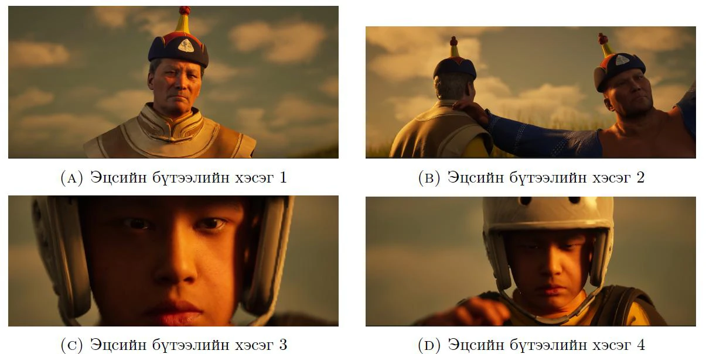
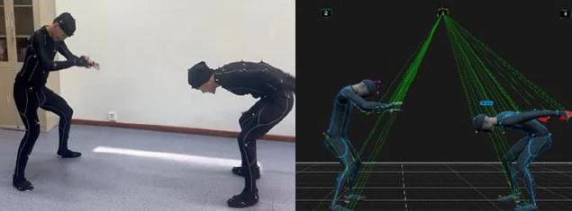

Монгол биелгээ
Нарийн, хурдан биеийн хөдөлгөөнийг бүртгэх.
Монгол үндэсний хөдөлгөөн, дүр төрх, хувцасны нарийн шинжийг Motion Capture технологиор бүртгэж, бодит мэт 3D дүр болон cinematic бүтээл болгон сэргээн бүтээсэн судалгаа, туршилт.

Биелгээ, сур харваа, үндэсний бөх болон хурдан морины хөдөлгөөнийг дижитал хэлбэрээр хадгалах, сургалт, судалгаа, бүтээлч үйлдвэрлэлд ашиглах боломжийг туршсан төсөл.
Судалгааны үндсэн зорилго нь OptiTrack оптик Motion Capture системээр хүний биеийн хөдөлгөөнийг өндөр нарийвчлалтай бичиж авах, 3D дүрийн ясны системд зангидах, MetaHuman дүр дээр үндэсний хувцас өмсгөн Unreal Engine 5 орчинд чанартай видео контент бүтээхэд чиглэсэн.
Motion Capture өгөгдөл, Blender боловсруулалт, MetaHuman дүр, Marvelous Designer болон MetaTailor хувцасны загварчлал, Unreal Engine 5 рендерийг нэг үйлдвэрлэлийн дамжлага болгон уялдуулсан.
Судалгааны эх PDF-ийг үзэх ↗Нарийн, хурдан биеийн хөдөлгөөнийг бүртгэх.
Гар, биеийн уялдаа болон хөдөлгөөний шилжилт.
Хос хөдөлгөөн, харилцан үйлчлэлийн туршилт.
Үндэсний өвийн сэдэвт cinematic дүрслэл.
Нэг цогц хөгжүүлэлтийн дамжлага: бичлэг → боловсруулалт → дүр → хувцас → симуляц → рендер.

OptiTrack оптик систем болон Motive Body програм ашиглан хөдөлгөөнийг 120 FPS давтамжтай, 53 маркерын багцаар бичиж авсан.
Зөвхөн хөдөлгөөн бичээд зогсохгүй, хөдөлгөөний чанар, хувцасны физик шинж болон эцсийн дүрслэлийг үнэлсэн.
Гол үе мөчдийн retargeting RMSE алдааны муж; дундаж нь ойролцоогоор 2.5 мм.
Эцсийн хувилбарт сонгосон Particle Distance. Даавууны жижиг үрчлээс, хормойн долгион болон мөргөлдөөнийг нарийвчлан дүрсэлсэн.
1920×1080 timeline, PBR материал, Cine Camera Actor, Post Process Volume ашигласан.
Доорх зургуудыг таны Motion_Capture.pdf баримтын 2–8-р хуудсаас шууд ашиглав.
Motion Capture технологи ашиглан боловсруулсан бүтээлүүдийг YouTube-ээр шууд үзээрэй.
Төслийн хүрээнд гаргасан эхний видео бүтээл.
YouTube дээр үзэх ↗Төслийн хүрээнд гаргасан хоёр дахь видео бүтээл.
YouTube дээр үзэх ↗Монголын өв уламжлалыг орчин үеийн дижитал технологиор сэргээн бүтээх шинэ боломж.